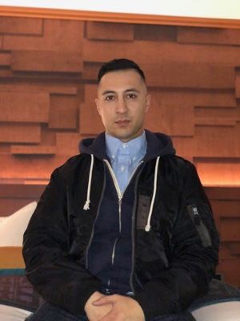

Apple
AI-native designer, creating experiences for internal teams to better serve you.

I build tools that empower humans. Currently designing AI experiences at Apple. Curiosity is my superpower.
AI-native designer, creating experiences for internal teams to better serve you.
Manufacturing and supply chain software.
Manufacturing platform for a clinical-stage cell therapy company. Plans runs across suites and equipment with a gated checklist per run.
Small experiments and one-off tools outside the main company work.
Small interactive experiments. Some real-time graphics, some prototypes I built to figure something out.
I'm a product designer at Apple. Previously, I spent time at Tesla and various biotech companies. I focus on making the complex feel simple.
I care deeply about craft, exploration, and prototyping. In my experience, the end product turns out stronger when those live inside the design phase, not after.
When I'm not tinkering with technology, you'll find me tending to my bonsai and garden.
Direct role in securing FDA approval for the world's largest biotech manufacturing facility (Genentech, Vacaville, CA).
Helped bring the Tesla Model 3 through global vehicle type approval.
Built software that connects cancer patients with the latest CAR-T therapies.
Led design on agentic AI that changed how AppleCare listens, responds, and resolves for customers.
The best way to reach me is kayvancm@gmail.com.
You can also find me on LinkedIn.